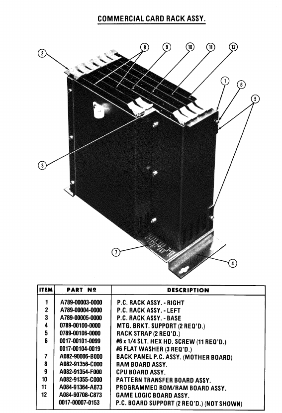

Space Zap
90706Space Zap Game Board91354CPU Board91355Pattern Board91356RAM Board
CPU, ROM/RAM layout, video RAM, protected RAM, scratchpad RAM, stack placement, interrupts, and Magic-memory
The Astrocade arcade model is a Z80-based board set built around the Bally/Midway Astrocade custom video/sound hardware designed by DNA.

The arcade card-rack games use a closely related board set. The CPU, Pattern, and RAM boards are common across the games below; each title then adds or swaps game-specific, ROM/RAM, or memory boards.
91354, 91355, and 91356 appear across this group. Wizard of Wor,
Gorf, and Robby Roto also share 90708 as the game board, while Space Zap uses
90706.
90706Space Zap Game Board91354CPU Board91355Pattern Board91356RAM Board90708Game Board91354CPU Board91355Pattern Transfer Board91356RAM Board91397Memory Board90708Game Board91354CPU Board91355Pattern Board91356RAM Board91364ROM/RAM Board90708Game Board91354CPU Board91355Pattern Board91356RAM Board91423Memory Board| Board | Function | Used by |
|---|---|---|
| 90706 | Space Zap Game Board | Space Zap |
| 90708 | Game Board | Wizard of Wor, Gorf, Robby Roto |
| 91354 | CPU Board | Space Zap, Wizard of Wor, Gorf, Robby Roto |
| 91355 | Pattern Board / Pattern Transfer Board | Space Zap, Wizard of Wor, Gorf, Robby Roto |
| 91356 | RAM Board | Space Zap, Wizard of Wor, Gorf, Robby Roto |
| 91364 | ROM/RAM Board | Gorf |
| 91397 | Memory Board | Wizard of Wor |
| 91423 | Memory Board | Robby Roto |
The most important concept is that $0000-$3FFF is a split-personality region.
On reads, it behaves like ROM. On writes, the Astrocade hardware sees a write into Magic memory. The Magic
function generator then performs the configured operation and writes the result into the actual framebuffer
side of the system.
ld a,($0123)
call $0200
jp $0100These are ordinary ROM fetches or reads. The CPU sees program bytes and constants.
ld a,$FF
ld ($0123),aThis does not alter ROM. It feeds the Magic write path. The current Magic/expand/shift/OR/XOR register state decides what appears in video RAM.
On Wizard of Wor, MAME places protected RAM at $D000-$D03F and ordinary work RAM at
$D040-$DFFF. That is only 64 bytes of protected RAM, so do not waste it.
| Area | Use it for | Avoid |
|---|---|---|
| $D000-$D03F | Credits, coin latch, bookkeeping, small persistent-ish state, watchdog-like sanity markers. | Large structs, sprite objects, animation tables, text buffers, stack. |
| $D040-$DFFF | Stack, runtime workspace, input snapshots, object structs, scratch buffers. | Assuming it survives reset or protected-RAM behavior. |
Protected RAM writes are gated. MAME models this with a write-enable latch: first write to the
protected-RAM-enable port, then write the target protected RAM byte. After the protected write, the enable
is cleared again. The mono pattern-board port map exposes the enable write at $A55B.
; Conceptual protected RAM write pattern
; Port/address form depends on assembler syntax and bus behavior.
ld a,$A5 ; convention used in our experiments
out ($5B),a ; effective protected-enable path / $A55B decode
ld a,new_value
ld ($D000),a ; one protected byte write
; write-enable is now consumedSP near $E000 and growing downward into
$D040-$DFFF, while reserving explicit variable/storage areas below it.
The Astrocade hardware supports raster/screen interrupts. For a field-guide machine model, the most useful developer view is simple:
| Topic | Practical meaning |
|---|---|
| Reset | Z80 reset begins execution at $0000. Put a jump there. |
| Interrupt vector | The hardware has video/interrupt registers in the low I/O register block. Commercial games set up an interrupt entry and use frame/scanline timing. |
| Frame counter | A tiny interrupt handler can increment a frame byte and sample critical inputs once per frame. |
| Raster tricks | Changing palette, split, or scanline-trigger state inside interrupts is possible, but should be considered a later chapter. |
; Minimal practical startup shape
org $0000
jp START
; ... interrupt vector / padding as needed ...
START:
di
ld sp,STACK_TOP
call InitVideo
call InitPalette
call InitProtectedState
call InitInterrupts
ei
MainLoop:
call WaitFrame
call PollInputs
call UpdateGame
call DrawFrame
jr MainLoopThe games share the Astrocade DNA, but the memory maps are not identical. Do not assume Wizard of Wor equals Gorf equals Robby Roto equals Space Zap.
| Game / class | Memory model notes | Why it matters |
|---|---|---|
| Wizard of Wor | Low ROM/Magic window, video RAM at $4000-$7FFF, extra ROM at $8000-$CFFF,
protected RAM at $D000-$D03F, work RAM to $DFFF. |
Best target for our current replacement-code experiments. |
| Gorf | Same broad Astrocade arcade class, but Gorf has additional speech/sound complexity and its own ROM/board configuration. | Good source for routines and patterns, but not a blind drop-in map for WoW. |
| Space Zap | MAME maps low ROM/Magic, video RAM, protected RAM at $D000-$D03F, and a smaller
ordinary RAM area ending at $D7FF. |
Simpler early reference; less RAM headroom than WoW in MAME's model. |
| Robby Roto | MAME maps low ROM/Magic, video RAM, ROM through $DFFF, NVRAM/protected area around
$E000, and ordinary RAM at $E800-$FFFF.
|
Valuable commercial-code specimen, but its RAM/protected/NVRAM layout differs heavily from WoW. |
| Professor Pac-Man / Demons & Dragons | Later 16-color/paged variants add banked behavior and screen-RAM control beyond the simpler WoW/Space Zap model. | Useful later, but do not contaminate the base WoW machine model with those assumptions. |
Put a reset jump at $0000. |
Initialize SP before calls or interrupts. |
| Keep stack and structs in ordinary work RAM. |
| Use protected RAM only for tiny state. |
| Separate direct VRAM writes from Magic writes in code comments and symbols. |
| Tag every hardware claim by confidence/source. |
Do not write to $0000-$3FFF expecting RAM. |
| Do not put large data in protected RAM. |
| Do not assume console Astrocade BIOS calls exist on arcade boards. |
| Do not copy Robby Roto's RAM map into WoW. |
| Do not enable interrupts until the vector, stack, and handler are sane. |
| Do not trust MAME-only timing claims until board-tested. |
ROM_LOW_START equ $0000
ROM_LOW_END equ $3FFF
MAGIC_WRITE_START equ $0000
MAGIC_WRITE_END equ $3FFF
SCREEN_RAM equ $4000
SCREEN_RAM_END equ $7FFF
SCREEN_STRIDE equ $0050 ; 80 bytes per high-res scanline, working model
ROM_HIGH_START equ $8000
ROM_HIGH_END equ $CFFF
RAM_PROTECTED_START equ $D000
RAM_PROTECTED_END equ $D03F
RAM_WORK_START equ $D040
RAM_WORK_END equ $DFFF
STACK_TOP equ $E000This chapter is intentionally written as a working developer model, not a museum label. The following sources should be kept close while refining it:
src/mame/midway/astrocde.cpp
Primary source for the memory maps, low ROM/Magic write window, video RAM mapping, protected RAM
mapping, ordinary RAM ranges, I/O port maps, pattern-board ports, and protected-RAM enable
behavior.
Open source
file
real-hardware-confirmed.